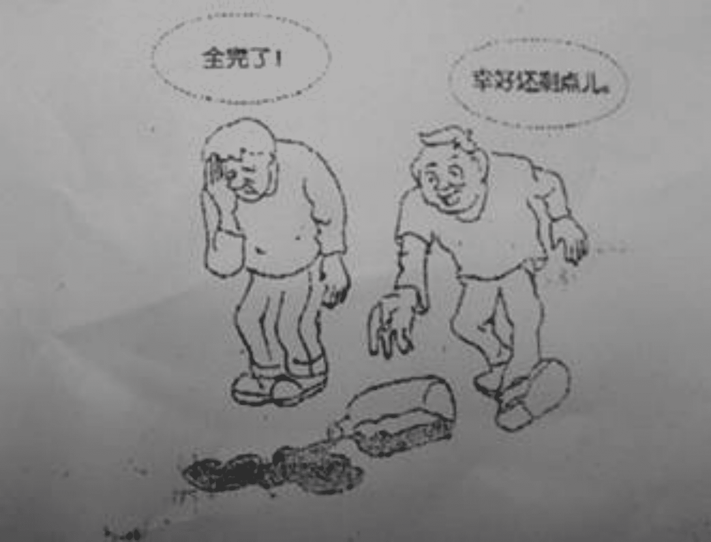

2012年全国硕士研究生入学统一考试英语试题(真题解析)(真题解析2)
*Section I Use of English*
*Directions:*
*Read the following text. Choose the best word(s) for each numbered blank and mark A, B, C or D on ANSWER SHEET 1. ( 10 points)*
The ethical judgments of the Supreme Court justices have become an important issue recently. The court cannot 1 its legitimacy as guardian of the rule of law 2 justices behave like politicians. Yet, in several instances, justices acted in ways that 3 the court’s reputation for being independent and impartial.
Justice Antonin Scalia, for example, appeared at political events. That kind of activity makes it less likely that the court’s decisions will be 4 as impartial judgments. Part of the problem is that the justices are not 5 by an ethics code. At the very least, the court should make itself 6 to the code of conduct that 7 to the rest of the federal judiciary.
This and other similar cases 8 the question of whether there is still a 9 between the court and politics.
The framers of the Constitution envisioned law 10 having authority apart from politics. They gave justices permanent positions 11 they would be free to 12 those in power and have no need to 13 political support. Our legal system was designed to set law apart from politics precisely because they are so closely 14 .
Constitutional law is political because it results from choices rooted in fundamental social 15 like liberty and property. When the court deals with social policy decisions, the law it 16 is inescapably political—which is why decisions split along ideological lines are so easily 17 as unjust.
The justices must 18 doubts about the court’s legitimacy by making themselves 19 to the code of conduct. That would make their rulings more likely to be seen as separate from politics and, 20 , convincing as law.
1.[A]emphasize [B]maintain [C]modify [D]recognize
2.[A]when [B]lest [C]before [D]unless
3.[A]restored [B]weakened [C]established [D]eliminated
4.[A]challenged [B]compromised [C]suspected [D]accepted
5.[A]advanced [B]caught [C]bound [D]founded
6.[A]resistant [B]subject [C]immune [D]prone
7.[A]resorts [B]sticks [C]leads [D]applies
8.[A]evade [B]raise [C]deny [D]settle
9.[A]line [B]barrier [C]similarity [D]conflict
10.[A]by [B]as [C]through [D]towards
11.[A]so [B]since [C]provided [D]though
12.[A]serve [B]satisfy [C]upset [D]replace
13.[A]confirm [B]express [C]cultivate [D]offer
14.[A]guarded [B]followed [C]studied [D]tied
15.[A]concepts [B]theories [C]divisions [D]conventions
16.[A]excludes [B]questions [C]shapes [D]controls
17.[A]dismissed [B]released [C]ranked [D]distorted
18.[A]suppress [B]exploit [C]address [D]ignore
19.[A]accessible [B]amiable [C]agreeable [D]accountable
20.[A]by all means [B]at all costs [C]in a word [D]as a result
*Section II Reading Comprehension*
*Part A*
*Directions:*
*Read the following four texts. Answer the questions below each text by choosing A, B, C or D. Mark your answers on ANSWER SHEET 1. (40 points)*
*Text 1*
Come on — Everybody’s doing it. That whispered message, half invitation and half forcing, is what most of us think of when we hear the words peer pressure. It usually leads to no good — drinking, drugs and casual sex. But in her new book Join the Club, Tina Rosenberg contends that peer pressure can also be a positive force through what she calls the social cure, in which organizations and officials use the power of group dynamics to help individuals improve their lives and possibly the world.
Rosenberg, the recipient of a Pulitzer Prize, offers a host of examples of the social cure in action: In South Carolina, a state-sponsored antismoking program called Rage Against the Haze sets out to make cigarettes uncool. In South Africa, an HIV-prevention initiative known as loveLife recruits young people to promote safe sex among their peers.
The idea seems promising，and Rosenberg is a perceptive observer. Her critique of the lameness of many public-health campaigns is spot-on：they fail to mobilize peer pressure for healthy habits, and they demonstrate a seriously flawed understanding of psychology. “Dare to be different, please don’t smoke!” pleads one billboard campaign aimed at reducing smoking among teenagers — teenagers, who desire nothing more than fitting in. Rosenberg argues convincingly that public-health advocates ought to take a page from advertisers, so skilled at applying peer pressure.
But on the general effectiveness of the social cure, Rosenberg is less persuasive. Join the Club is filled with too much irrelevant detail and not enough exploration of the social and biological factors that make peer pressure so powerful. The most glaring flaw of the social cure as it’s presented here is that it doesn’t work very well for very long. Rage Against the Haze failed once state funding was cut. Evidence that the loveLife program produces lasting changes is limited and mixed.
There’s no doubt that our peer groups exert enormous influence on our behavior. An emerging body of research shows that positive health habits — as well as negative ones — spread through networks of friends via social communication. This is a subtle form of peer pressure: we unconsciously imitate the behavior we see every day.
Far less certain, however, is how successfully experts and bureaucrats can select our peer groups and steer their activities in virtuous directions. It’s like the teacher who breaks up the troublemakers in the back row by pairing them with better-behaved classmates. The tactic never really works. And that’s the problem with a social cure engineered from the outside: in the real world, as in school, we insist on choosing our own friends.
*21. According to the first paragraph,* *peer* *pressure often emerges as __________.*
[A] a supplement to the social cure [B] a stimulus to group dynamics
[C] an obstacle to social progress [D] a cause of undesirable behaviors
*22. Rosenberg holds that public advocates should _________.*
[A] recruit professional advertisers [B] learn from advertisers’ experience
[C] stay away from commercial advertisers [D] recognize the limitations of advertisements
*23. In the author’s view, Rosenberg’s book fails to __________.*
[A] adequately probe social and biological factors [B] effectively evade the flaws of the social cure
[C] illustrate the functions of state funding [D] produce a long-lasting social effect
*24. Paragraph 5 shows that our imitation of behaviors __________.*
[A] is harmful to our networks of friends [B] will mislead behavioral studies
[C] occurs without our realizing it [D]can produce negative health habits
*25. The author suggests in the last paragraph that the effect ofpeer pressure is __________.*
[A] harmful [B] desirable [C] profound [D] questionable
*Text 2*
A deal is a deal — except, apparently, when Entergy is involved. The company, a major energy supplier in New England, provoked justified outrage in Vermont last week when it announced it was reneging on a longstanding commitment to abide by the strict nuclear regulations.
Instead, the company has done precisely what it had long promised it would not: challenge the constitutionality of Vermont’s rules in the federal court, as part of a desperate effort to keep its Vermont Yankee nuclear power plant running. It’s a stunning move.
The conflict has been surfacing since 2002, when the corporation bought Vermont’s only nuclear power plant, an aging reactor in Vernon. As a condition of receiving state approval for the sale, the company agreed to seek permission from state regulators to operate past 2012. In 2006, the state went a step further, requiring that any extension of the plant’s license be subject to Vermont legislature’s approval. Then, too, the company went along.
Either Entergy never really intended to live by those commitments, or it simply didn’t foresee what would happen next. A string of accidents, including the partial collapse of a cooling tower in 2007 and the discovery of an underground pipe system leakage, raised serious questions about both Vermont Yankee’s safety and Entergy’s management — especially after the company made misleading statements about the pipe. Enraged by Entergy’s behavior, the Vermont Senate voted 26 to 4 last year against allowing an extension.
Now the company is suddenly claiming that the 2002 agreement is invalid because of the 2006 legislation, and that only the federal government has regulatory power over nuclear issues. The legal issues in the case are obscure: whereas the Supreme Court has ruled that states do have some regulatory authority over nuclear power, legal scholars say that Vermont case will offer a precedent-setting test of how far those powers extend. Certainly, there are valid concerns about the patchwork regulations that could result if every state sets its own rules. But had Entergy kept its word, that debate would be beside the point.
The company seems to have concluded that its reputation in Vermont is already so damaged that it has nothing left to lose by going to war with the state. But there should be consequences. Permission to run a nuclear plant is a public trust. Entergy runs 11 other reactors in the United States, including Pilgrim Nuclear station in Plymouth. Pledging to run Pilgrim safely, the company has applied for federal permission to keep it open for another 20 years. But as the Nuclear Regulatory Commission (NRC) reviews the company’s application, it should keep it mind what promises from Entergy are worth.
*26. The phrase “reneging on” (Line 3.para.1) is closest in meaning to _________.*
[A] condemning [B] reaffirming [C] dishonoring [D] securing
*27. By entering into the 2002 agreement, Entergy intended to __________.*
[A] obtain protection from Vermont regulators [B] seek favor from the federal legislature
[C] acquire an extension of its business license [D] get permission to purchase a power plant
*28. According to Paragraph 4, Entergy seems to have problems with its ___________.*
[A] managerial practices [B] technical innovativeness [C] financial goals [D] business vision
*29. In the author’s view, the Vermont case will test ___________.*
[A] Entergy’s capacity to fulfill all its promises [B] the mature of states’ patchwork regulations
[C] the federal authority over nuclear issues [D] the limits of states’ power over nuclear issues
*30. It can be inferred from the last paragraph that __________.*
[A] Entergy’s business elsewhere might be affected [B] the authority of the NRC will be defied
[C] Entergy will withdraw its Plymouth application [D] Vermont’s reputation might be damaged
*Text 3*
In the idealized version of how science is done, facts about the world are waiting to be observed and collected by objective researchers who use the scientific method to carry out their work. But in the everyday practice of science, discovery frequently follows an ambiguous and complicated route. We aim to be objective, but we cannot escape the context of our unique life experiences. Prior knowledge and interests influence what we experience, what we think our experiences mean, and the subsequent actions we take. Opportunities for misinterpretation, error, and self-deception abound.
Consequently, discovery claims should be thought of as protoscience. Similar to newly staked mining claims, they are full of potential. But it takes collective scrutiny and acceptance to transform a discovery claim into a mature discovery. This is the credibility process, through which the individual researcher’s me, here, now becomes the community’s anyone, anywhere, anytime. Objective knowledge is the goal, not the starting point.
Once a discovery claim becomes public, the discoverer receives intellectual credit. But, unlike with mining claims, the community takes control of what happens next. Within the complex social structure of the scientific community, researchers make discoveries; editors and reviewers act as gatekeepers by controlling the publication process; other scientists use the new finding to suit their own purposes; and finally, the public (including other scientists) receives the new discovery and possibly accompanying technology. As a discovery claim works its way through the community, the interaction and confrontation between shared and competing beliefs about the science and the technology involved transforms an individual’s discovery claim into the community’s credible discovery.
Two paradoxes exist throughout this credibility process. First, scientific work tends to focus on some aspect of prevailing knowledge that is viewed as incomplete or incorrect. Little reward accompanies duplication and confirmation of what is already known and believed. The goal is new-search, not re-search. Not surprisingly, newly published discovery claims and credible discoveries that appear to be important and convincing will always be open to challenge and potential modification or refutation by future researchers. Second, novelty itself frequently provokes disbelief. Nobel Laureate and physiologist Albert Szent-Györgyi once described discovery as “seeing what everybody has seen and thinking what nobody has thought.” But thinking what nobody else has thought and telling others what they have missed may not change their views. Sometimes years are required for truly novel discovery claims to be accepted and appreciated.
In the end, credibility “happens” to a discovery claim — a process that corresponds to what philosopher Annette Baier has described as the commons of the mind. “We reason together, challenge, revise, and complete each other’s reasoning and each other’s conceptions of reason.”
*31. According to the first paragraph, the process of discovery is characterized by its ______.*
[A] uncertainty and complexity [B] misconception and deceptiveness
[C] logicality and objectivity [D] systematicness and regularity
*32. It can be inferred from Paragraph 2 that credibility process requires _________.*
[A] strict inspection [B] shared efforts [C] individual wisdom [D] persistent innovation
*33. Paragraph 3 shows that a discovery claim becomes credible after it _________.*
[A] has attracted the attention of the general public [B] has been examined by the scientific community
[C] has received recognition from editors and reviewers [D] has been frequently quoted by peer scientists
*34. Albert Szent-Györgyi would most likely agree that _________.*
[A] scientific claims will survive challenges [B] discoveries today inspire future research
[C] efforts to make discoveries are justified [D]scientific work calls for a critical mind
*35. Which of the following would be the best title of the text?*
[A] Novelty as an Engine of Scientific Development [B] Collective Scrutiny in Scientific Discovery
[C] Evolution of Credibility in Doing Science [D] Challenge to Credibility at the Gate to Science
*Text 4*
If the trade unionist Jimmy Hoffa were alive today, he would probably represent civil servants. When Hoffa’s Teamsters were in their prime in 1960, only one in ten American government workers belonged to a union; now 36% do. In 2009 the number of unionists in America’s public sector passed that of their fellow members in the private sector. In Britain, more than half of public-sector workers but only about 15% of private-sector ones are unionized.
There are three reasons for the public-sector unions’ thriving. First, they can shut things down without suffering much in the way of consequences. Second, they are mostly bright and well-educated. A quarter of America’s public-sector workers have a university degree. Third, they now dominate left-of-centre politics. Some of their ties go back a long way. Britain’s Labor Party, as its name implies, has long been associated with trade unionism. Its current leader, Ed Miliband, owes his position to votes from public-sector unions.
At the state level their influence can be even more fearsome. Mark Baldassare of the Public Policy Institute of California points out that much of the state’s budget is patrolled by unions. The teachers’ unions keep an eye on schools, the CCPOA on prisons and a variety of labor groups on health care.
In many rich countries average wages in the state sector are higher than in the private one. But the real gains come in benefits and work practices. Politicians have repeatedly “backloaded” public-sector pay deals, keeping the pay increases modest but adding to holidays and especially pensions that are already generous.
Reform has been vigorously opposed, perhaps most egregiously in education, where charter schools, academies and merit pay all faced drawn-out battles. Even though there is plenty of evidence that the quality of the teachers is the most important variable, teachers’ unions have fought against getting rid of bad ones and promoting good ones.
As the cost to everyone else has become clearer, politicians have begun to clamp down. In Wisconsin the unions have rallied thousands of supporters against Scott Walker, the hardline Republican governor. But many within the public sector suffer under the current system, too.
John Donahue at Harvard’s Kennedy School points out that the norms of culture in Western civil services suit those who want to stay put but is bad for high achievers. The only American public-sector workers who earn well above $250,000 a year are university sports coaches and the president of the United States. Bankers’ fat pay packets have attracted much criticism, but a public-sector system that does not reward high achievers may be a much bigger problem for America.
*36. It can be learned from the first paragraph that _________.*
[A] Teamsters still have a large body of members
[B] Jimmy Hoffa used to work as a civil servant
[C] unions have enlarged their public-sector membership
[D] the government has improved its relationship with unionists
*37. Which of the following is true of Paragraph 2?*
[A] Public-sector unions are prudent in taking actions.
[B] Education is required for public-sector union membership.
[C] Labor Party has long been fighting against public-sector unions.
[D] Public-sector unions seldom get in trouble for their actions.
*38. It can be learned from Paragraph 4 that the income in the state sector is _________.*
[A] illegally secured [B] indirectly augmented [C] excessively increased [D] fairly adjusted
*39. The example of the unions in Wisconsin shows that unions __________.*
[A] often run against the current political system [B] can change people’s political attitudes
[C] may be a barrier to public-sector reforms [D] are dominant in the government
*40. John Donahue’s attitude towards the public-sector system is one of _________.*
[A] disapproval [B] appreciation [C] tolerance [D] indifference
*Part B*
*Directions:*
*In the following text, some sentences have been removed. For Questions 41-45, choose the most suitable one from the list A-G to fit into each of the numbered blanks. There are two extra choices, which do not fit in any of the blanks. Mark your answers on ANSWER SHEET 1.**（**10 points**）*
Think of those fleeting moments when you look out of an aeroplane window and realise that you are flying, higher than a bird. Now think of your laptop, thinner than a brown-paper envelope, or your cellphone in the palm of your hand. Take a moment or two to wonder at those marvels. You are the lucky inheritor of a dream come true.
The second half of the 20th century saw a collection of geniuses, warriors, entrepreneurs and visionaries labour to create a fabulous machine that could function as a typewriter and printing press, studio and theatre, paintbrush and gallery, piano and radio, the mail as well as the mail carrier. (41)___________.
The networked computer is an amazing device, the first media machine that serves as the mode of production, means of distribution, site of reception, and place of praise and critique. The computer is the 21st century’s culture machine.
But for all the reasons there are to celebrate the computer, we must also act with caution. (42) ___________. I call it a secret war for two reasons. First, most people do not realise that there are strong commercial agendas at work to keep them in passive consumption mode. Second, the majority of people who use networked computers to upload are not even aware of the significance of what they are doing.
All animals download, but only a few upload. Beavers build dams and birds make nests. Yet for the most part, the animal kingdom moves through the world downloading. Humans are unique in their capacity to not only make tools but then turn around and use them to create superfluous material goods— paintings, sculpture and architecture — and superfluous experiences —music, literature, religion and philosophy. (43) ___________.
For all the possibilities of our new culture machines, most people are still stuck in download mode. Even after the advent of widespread social media, a pyramid of production remains, with a small number of people uploading material, a slightly larger group commenting on or modifying that content, and a huge percentage remaining content to just consume. (44) ___________.
Television is a one-way tap flowing into our homes. The hardest task that television asks of anyone is to turn the power off after he has turned it on. (45) ___________.
What counts as meaningful uploading? My definition revolves around the concept of “stickiness” — creations and experiences to which others adhere.
[A] Of course, it is precisely these superfluous things that define human culture and ultimately what it is to be human. Downloading and consuming culture requires great skills, but failing to move beyond downloading is to strip oneself of a defining constituent of humanity.
[B] Applications like tumblr.com, which allow users to combine pictures, words and other media in creative ways and then share them, have the potential to add stickiness by amusing, entertaining and enlightening others.
[C] Not only did they develop such a device but by the turn of the millennium they had also managed to embed it in a worldwide system accessed by billions of people every day.
[D] This is because the networked computer has sparked a secretwar between downloading and uploading — between passive consumption and active creation — whose outcome will shape our collective future in ways we can only begin to imagine.
[E] The challenge the computer mounts to television thus bears little similarity to one format being replaced by another in the manner of record players being replaced by CD players.
[F] One reason for the persistence of this pyramid of production is that for the past half-century, much of the world’s media culture has been defined by a single medium — television — and television is defined by downloading.
[G] The networked computer offers the first chance in 50 years to reverse the flow, to encourage thoughtful downloading and, even more importantly, meaningful uploading.
*Part C*
*Directions:*
*Read the following text carefully and then translate the underlined segments into Chinese. Your translation should be written clearlyon ANSWER SHEET 2. (10 points)*
Since the days of Aristotle, a search for universal principles has characterized the scientific enterprise. In some ways, this quest for commonalities defines science. Newton’s laws of motion and Darwinian evolution each bind a host of different phenomena into a single explicatory framework.
(46) In physics, one approach takes this impulse for unification to its extreme, and seeks a theory of everything — a single generative equation for all we see. It is becoming less clear, however, that such a theory would be a simplification, given the dimensions and universes that it might entail. Nonetheless, unification of sorts remains a major goal.
This tendency in the natural sciences has long been evident in the social sciences too. (47) Here, Darwinism seems to offer justification, for if all humans share common origins, it seems reasonable to suppose that cultural diversity could also be traced to more constrained beginnings. Just as the bewildering variety of human courtship rituals might all be considered forms of sexual selection, perhaps the world’s languages, music, social and religious customs and even history are governed by universal features. (48)To filter out what is unique from what is shared might enable us to understand how complex cultural behavior arose and what guides it in evolutionary or cognitive terms.
That, at least, is the hope. But a comparative study of linguistic traits published online today supplies a reality check. Russell Gray at the University of Auckland and his colleagues consider the evolution of grammars in the light of two previous attempts to find universality in language.
The most famous of these efforts was initiated by Noam Chomsky, who suggested that humans are born with an innate language—acquisition capacity that dictates a universal grammar. A few generative rules are then sufficient to unfold the entire fundamental structure of a language, which is why children can learn it so quickly.
(49) The second, by Joshua Greenberg, takes a more empirical approach to universality, identifying traits (particularly in word order) shared by many language which are considered to represent biases that result from cognitive constraints
Gray and his colleagues have put them to the test by examining four family trees that between them represent more than 2,000 languages. (50)Chomsky’s grammar should show patterns of language change that are independent of the family tree or the pathway tracked through it, whereas Greenbergian universality predicts strong co-dependencies between particular types of word-order relations. Neither of these patterns is borne out by the analysis, suggesting that the structures of the languages are lineage-specific and not governed by universals.
*Section III Writing*
*Part A*
*51. Directions:*
Some international students are coming to your university. Write them an email in the name of the Students’ Union to
-
extend your welcome and
-
provide some suggestions for their campus life here.
You should write about 100 words on ANSWER SHEET 2.
*Do not* sign your own name at the end of the letter. Use “Li Ming” instead.
*Do not* write the address. (10 points)
*Part B*
*52. Directions:*
Write an essay of 160-200 words based on the following drawing. In your essay, you should
-
describe the drawing briefly,
-
explain its intended meaning, and
-
give your comments.
You should write neatly on ANSWER SHEET 2. (20 points)
